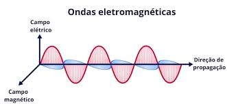
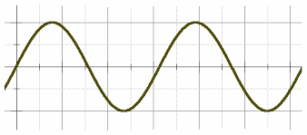
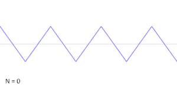
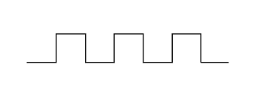

As ondas eletromagnéticas são oscilações combinadas dos campos elétrico e magnético que se propagam no espaço. Elas são chamadas de "eletromagnéticas" porque envolvem tanto o campo elétrico quanto o magnético, que são perpendiculares entre si e à direção de propagação da onda.
Essas ondas não necessitam de um meio material para se propagar, o que permite sua transmissão através do vácuo, como é o caso da luz visível, das ondas de rádio e de outras formas de radiação.
A velocidade de propagação das ondas eletromagnéticas no vácuo é dada pela fórmula:
v = λ * f
Onde v é a velocidade da onda, λ é o comprimento de onda e f é a frequência. No vácuo, essa velocidade é aproximadamente 3 × 10⁸ metros por segundo (m/s), conhecida como velocidade da luz.
As ondas podem ter diferentes formas, e isso altera sua representação matemática. Abaixo estão as fórmulas de três tipos comuns de ondas:
A onda senoidal é representada pela seguinte fórmula:
y(x, t) = A * sin(kx - ωt)
Essa fórmula descreve uma oscilação suave e contínua, sem descontinuidades. A onda senoidal é utilizada para descrever fenômenos como luz e som.
A onda triangular é representada de forma semelhante à onda senoidal, mas com transições lineares em vez de suaves. A fórmula da onda triangular pode ser expressa como:
y(x, t) = A * (2/π) * arcsin(sin(kx - ωt))
Essa fórmula descreve uma oscilação que sobe e desce linearmente, criando picos e vales com transições abruptas. Ela é frequentemente usada para sinais de modulação e áudio.
A onda quadrada é uma forma de onda que alterna abruptamente entre dois valores, criando uma transição rápida. Sua fórmula pode ser expressa como:
y(x, t) = A * sgn(sin(kx - ωt))
Onde a função sgn() retorna 1 quando a entrada é positiva e -1 quando é negativa. A onda quadrada tem transições abruptas entre seus valores máximo e mínimo, sendo útil para sinais digitais e ondas de impulsos.
As ondas eletromagnéticas possuem diversas propriedades que influenciam seu comportamento e sua interação com a matéria, como reflexão, refração, difração e polarização. A manipulação dessas propriedades é essencial em tecnologias como a comunicação sem fio, radares, lasers e em aplicações científicas, como a espectroscopia.